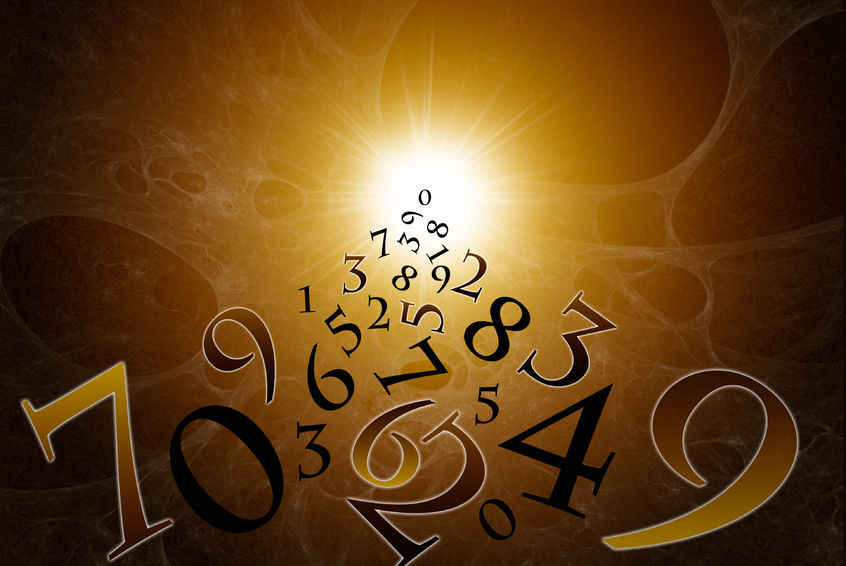

Dans la mythologie Grècque, l’aventure de la conscience suit la symbolique des chiffres, lesquels ont été inventés il y a trois mille ans par les Indiens. La coutume veut que les chiffres symbolisent l'évolution de la vie en partant de l'infini pour aboutir de même à l'infini.
La courbe indique l’amour
La croix indique l’épreuve
Le trait horizontal indique l’attachement
Examinons leurs dessins !

Les chiffres content (ou comptent) dans leur symbolique l’histoire de l’évolution de la conscience. Tous les romans, tous les drames sont peut-être inclus dans ces dessins que nous avons constamment face à nos yeux mais que nous n’avons jamais pris la peine d’examiner attentivement dans leurs formes.
Chaque fois que l'on trace un chiffre, on transmet cette sagesse.